日帰りなのに、まるでちょっとしたプチ旅行。
最高のリトリート体験でした。
10月3日の土曜日、13時半のランチ予約で湯河原惣湯へ。気づけば18時ごろまで、5時間。静かな森の中で、本当に何もせず、ただのんびり。
写真多めで、さらっと読めるレポートです。お茶でも飲みながら、どうぞ。
川の音を聞きながら、歩いて向かう
西湘バイパスをドライブして湯河原へ。施設は万葉公園の奥。川のせせらぎを聞きながら、緑あふれる遊歩道を歩いて向かいます。
このアプローチで、もう日常を忘れちゃいます。
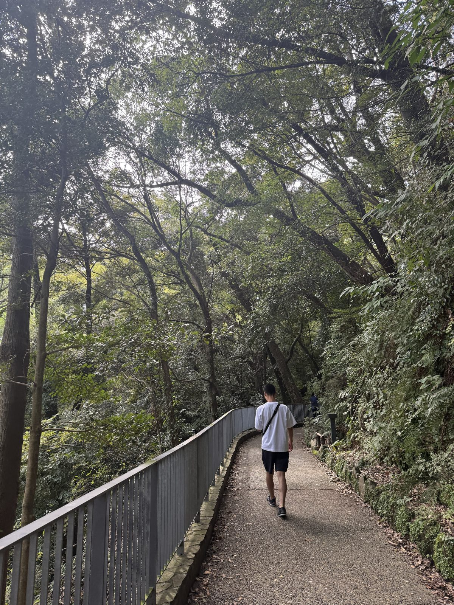
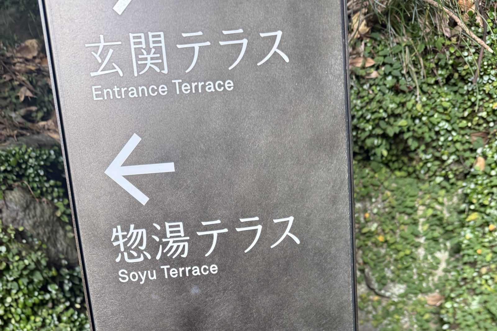
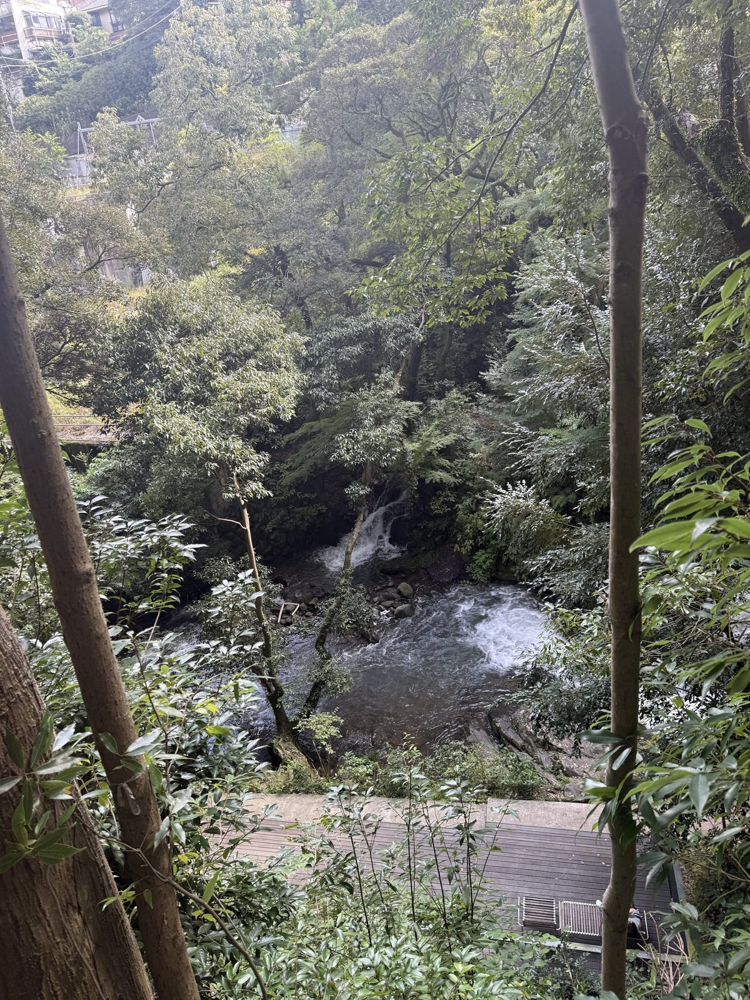
着いたら館内着に着替えて、最大5時間ののんびりタイム。まさに「何もしない贅沢」を味わうための空間です。人工物が少なくて、建物そのものが森に溶け込むようなデザインも素敵。
この日の5時間
- ランチの予約時間に到着。館内着にお着替え※本当は渋滞がなければ、少し早めに着いて万葉公園内をしっかりお散歩する予定でした。ギリギリになってしまい、かなわず。
- シャワーと温泉で軽くあたたまり、さっそくぼーっとする時間
- 一品ずつ丁寧な和食のお膳
- 離れの奥の湯へ。完全一人の源泉かけ流しのお風呂を20分
- 2階のライブラリーで、本とお水とうたたね
- ごろ退館
罪悪感ゼロの、ヘルシー和食ランチ
楽しみにしていた予約ランチは、一品ずつ丁寧に作られた和食。素材の味を活かした、体にやさしいおかずばかり。罪悪感ゼロで、嬉しい内容でした！
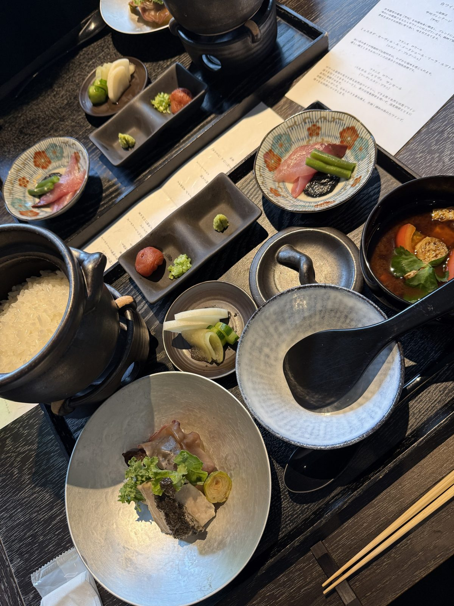
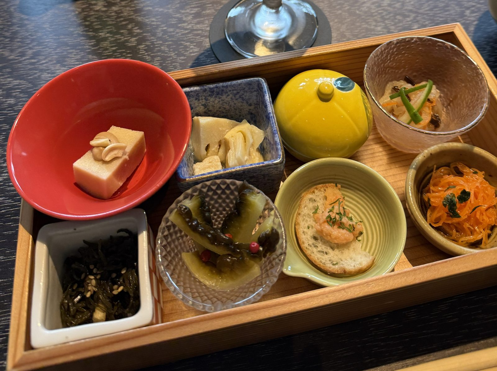
ただ、とても上品な量。お腹いっぱいガッツリ食べたい！という方には、ちょっと物足りないかも（笑）。でもそのおかげで、このあとの温泉も読書も、体が重くならずに快適でした。
デザートは、ひと口サイズの水ようかん。おいしかったけれど、これまた小さ～い！
実は、帰宅後にラーメンを食べちゃいました（笑）。
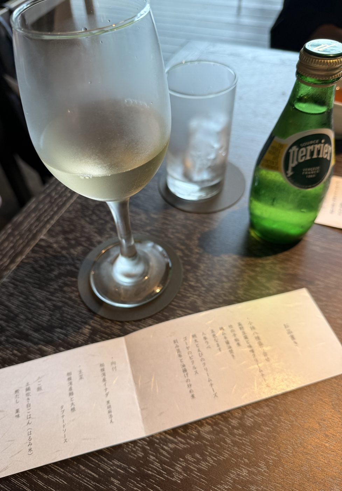
川の流れを見ながら、ひとりの時間
食後は源泉かけ流しの温泉へ。露天風呂から見える木々の緑と清々しい空気に、日ごろの疲れがスーッと溶けていくよう。
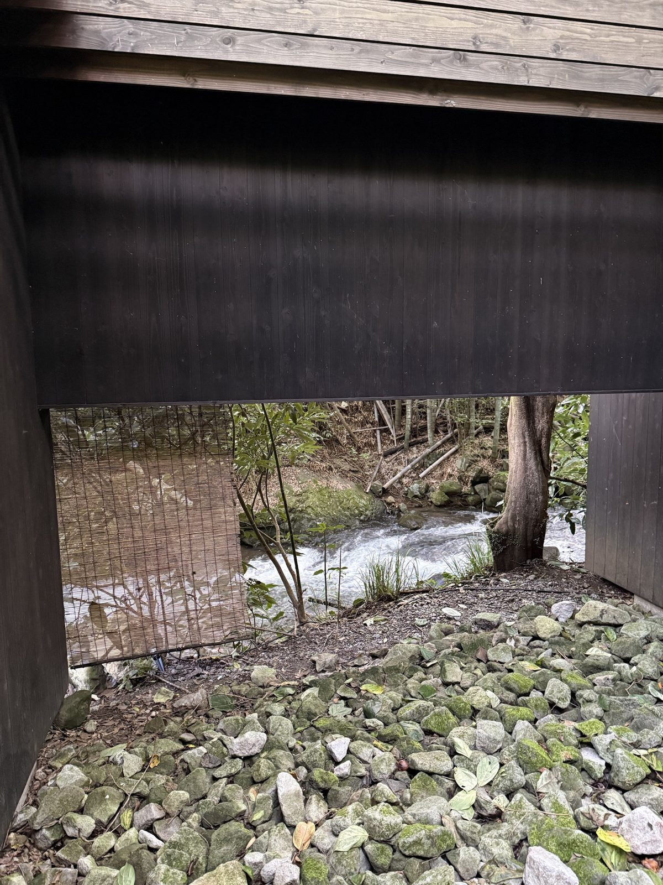
温泉は男湯と女湯に分かれています。私が行ったときはとても静かで、多くても3〜4人。ひとりきりになる時間もあって、人目を気にする必要はまったくなし。
もうひとつの楽しみが、「奥の湯」の貸切風呂。施設から川沿いを少しお散歩した先にある、離れの個室風呂です。男女別で、完全に一人で入れます。
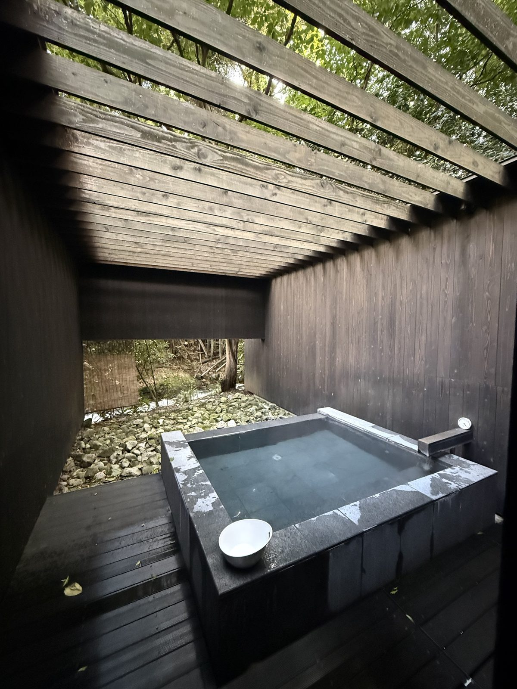
体を洗うシャワーはなく、つかるだけ。一人20分の枠で、事前に台帳へ記入して予約します。
川を見ながら、川の音を聞きながら、しっかり一人時間を満喫。まさに非日常です。自然と一体になれるようなお風呂でした！
「本と温泉」の、2階のラウンジ
ただの温泉施設じゃないのが、ここの特徴。「本と温泉」というコンセプトです。湯上がりは2階のライブラリーでのんびり。置いてあるのは自然、食、アートの本が中心で、いつもと違う新しい本との出会いがあるかも。
好みは分かれそうなので、お気に入りの本を持参するのが間違いないです。
うまく再生されないときは、こちらから直接開いてください。
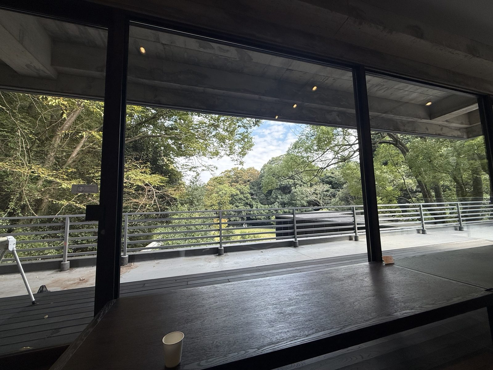
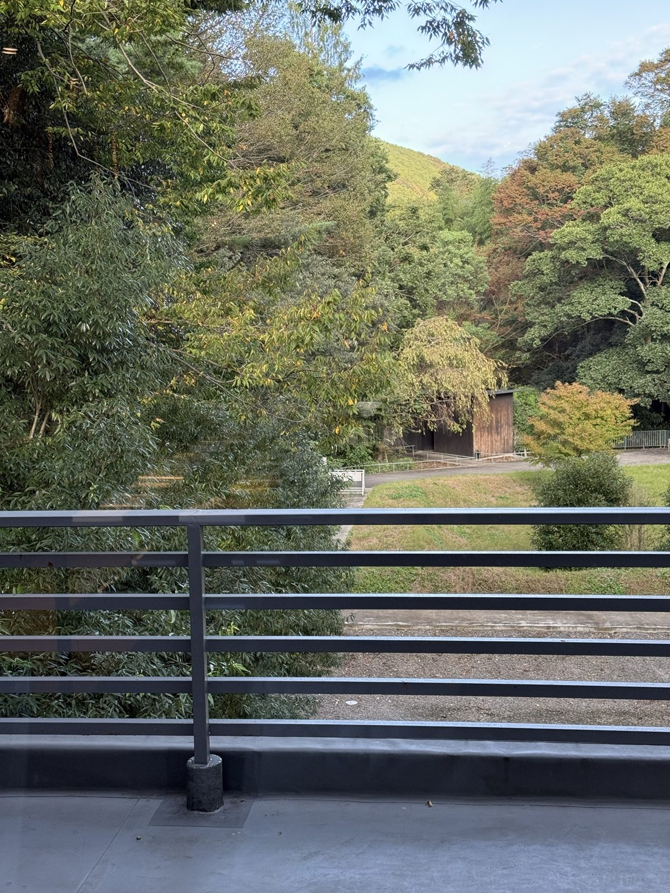
滞在中は、デトックスウォーターやコーヒー、紅茶がフリードリンク。レモンとミントのお水がスッキリおいしくて、おしゃれで、何杯も飲んじゃいました。
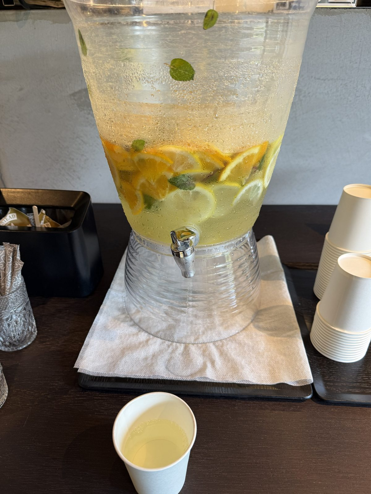
ひとつだけ本音を言うと、コーヒー。ドリップバッグ式で、ポットのお湯を注ぐスタイルです。ちょっと薄めで、「豆から挽いてほしい！」と心の中で叫びました（笑）。そのぶん、レモンミントのお水が最高。
頭の中がとっ散らかっている私に、ちょうどよかった
ふだんの私は、あれこれ詰め込みがちで、頭の中はいつもとっ散らかり気味です。だからこそ、こういう場所を欲していました。
何もしない。それがいちばんのポイント。
この日は大人の方ばかり。夫婦で、おひとりで、母娘で、とそれぞれの過ごし方で、年齢層もさまざま。中学生以上という入場制限があるので、みなさん静かに自分の時間を楽しんでいました。
行ってみたくなった方へ
- 場所
- 神奈川県足柄下郡湯河原町宮上566
万葉公園の奥「湯河原惣湯 Books and Retreat」 - 営業時間
- 10:00〜18:30（最終入館 16:15）
- 料金
- お食事つき 6,800円（最大5時間）
お食事なし 3,500円（最大3時間）
税込・入湯税込 - 予約
- 原則予約制。公式サイトか電話 0465-43-8105
- 対象
- 中学生以上
- 電車・バス
- JR湯河原駅から奥湯河原方面行きのバスで約10分、「落合橋」下車すぐ
- お車
- 万葉公園の駐車場（有料）
私は土曜日に車で出発して、渋滞で片道2時間ほど。西湘バイパスを降りたあとは、海沿いの国道135号をほぼ一本道で進みます。片側1車線で逃げ道がないので、週末は流れが止まりがち。渋滞がなければ1時間ほどのはず。週末は電車とバスのほうがスムーズかも。
いわゆるスパや温泉施設とは違って、アメニティはドライヤーぐらいでほぼなし。シャワーのところには、ボディソープ、シャンプー、リンスがありました。
保湿系やコットン、綿棒はなし。女性の更衣室に、化粧水と乳液だけ置いてあったかな。クレンジングや洗顔フォームは、自分のものを持っていくと快適かも。
施設に入ったら、まず館内着に着替えて、荷物はロッカーへ。身軽で館内をうろうろできます。スパバッグのような小物バッグ、スマホだけ入れられるものがあると便利かも。
でも、スマホはロッカーに入れっぱなしにして、ひたすらデジタルデトックスも本当にありです。
※ 別のサイトが開きます
2026年10月に調べた情報です。料金や休館日は変わることがあるので、行く前に公式サイトでご確認ください。
フラで大切にしている、自然への敬意。
この日は、それをそのまま体で感じた5時間でした。
最後まで読んでくださって、ありがとうございました。